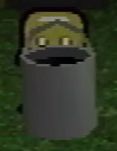

Bucket

The gray bucket from the house
The bucket is an item found in several places that Paul uses on occasion to solve puzzles. It is typically used to capture other things, but they do have some other purposes.
Instances
Even Care bucket
The bucket first appears in Wavey and Randice's room in Even Care. The two pets will teleport away from the player before they can be caught, Paul places the bucket in one of the spots they switch between, catching Wavey in the process. Once Wavey is captured, he can be caught by walking over the bucket. This also causes the bucket to temporarily disappear.
Paul uses the information gained from capturing the teal tool back in Even Care. He creates a new file and uses the bucket from Wavey and Randice's room to capture Roneth. Given that the bucket can only be used to pick up one pet at a time, it is unclear how the player could capture Roneth, Wavey, & Randice in the same file, though it is reasonable to assume that the bucket resets at some point.
House bucket
In Petscop 11, after Paul exits the bathroom, the house changes to the June variation, and a bucket of black paint spawns in the main room of the house. In Petscop 13, Paul discovers he can push the bucket through the door and take it to the teal tool to capture it. Paul uses the teal tool contained in the bucket to remove the pieces attached to the object on the table outside Care's room, gaining 15 pieces but losing the tool and bucket in the process.
In recordings shown in Petscop 14, Paul pushes the bucket of black paint in the house into the master bedroom and to the wall at the far right. This causes the camera to focus on the wall and a paint roller appears, which with moving the guardian can be moved up, down, and to sides of part of the previously green wall to paint it black. After the wall has been painted and the bucket is out of paint, Paul gets a silver key.
")
{kind=link}
{kind=link}
{kind=link}
{kind=link}